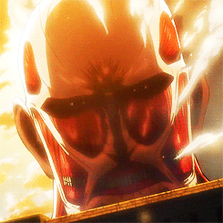

El Titán Colosal es una de las figuras más imponentes y reconocibles en Shingeki no Kyojin. Con una altura de 60 metros, el Titán Colosal es
significativamente más grande que la mayoría de los titanes, lo que le permite causar destrucción masiva con su mera presencia. Su poseedor original,
Bertolt Hoover, utilizó su enorme tamaño y capacidad para generar calor y vapor extremos como armas devastadoras en la lucha contra la humanidad.
El Titán Colosal puede aparecer repentinamente detrás de los muros de la humanidad, utilizando su increíble poder para abrir brechas y permitir la
invasión de otros titanes. A lo largo de la serie, el Titán Colosal representa una amenaza formidable y un símbolo de terror, debido a su inmenso poder
destructivo y su capacidad para alterar el curso de la guerra en un instante.
